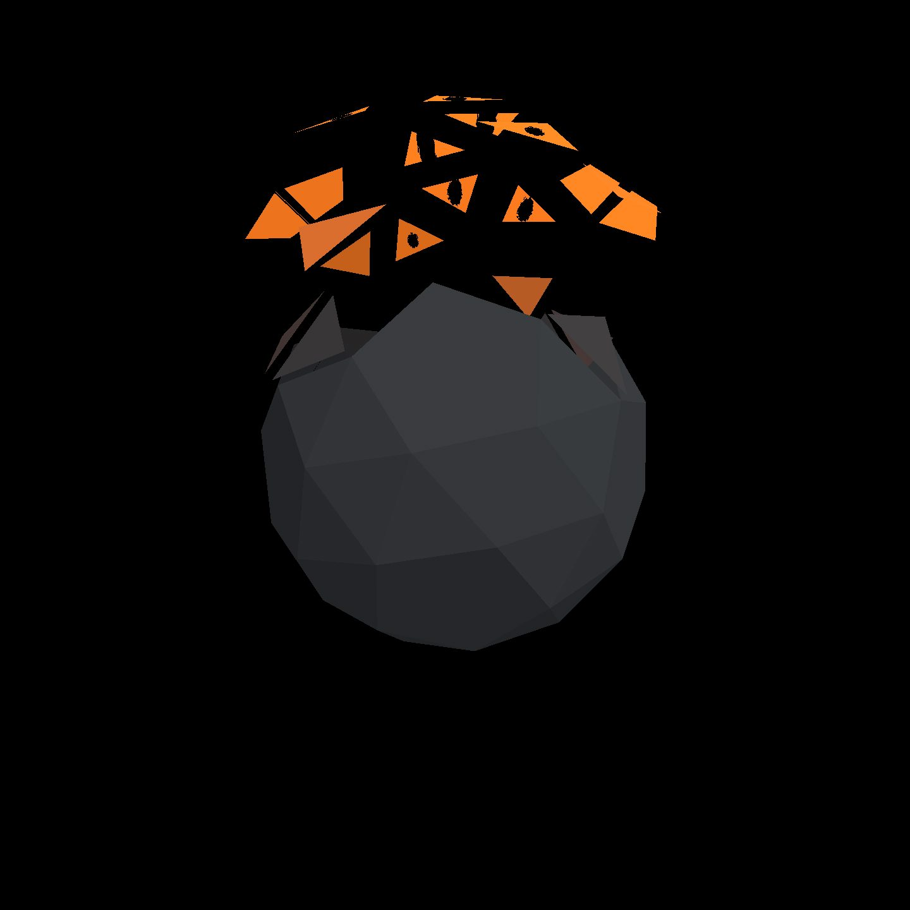
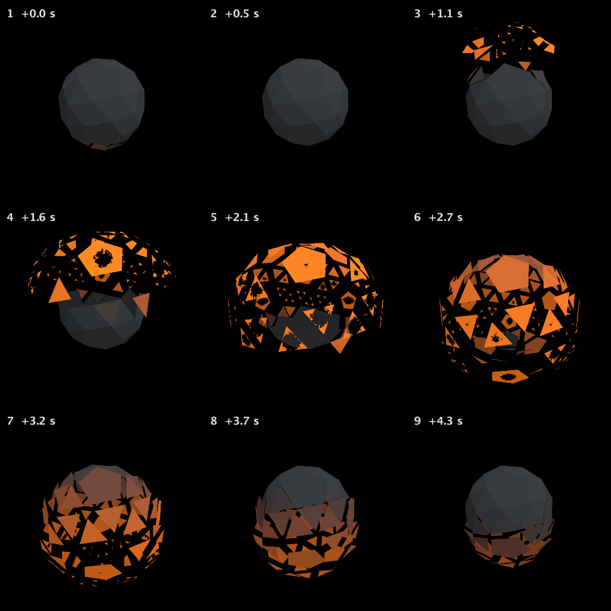
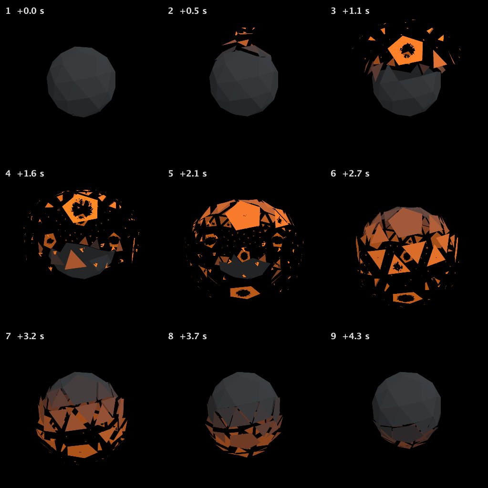
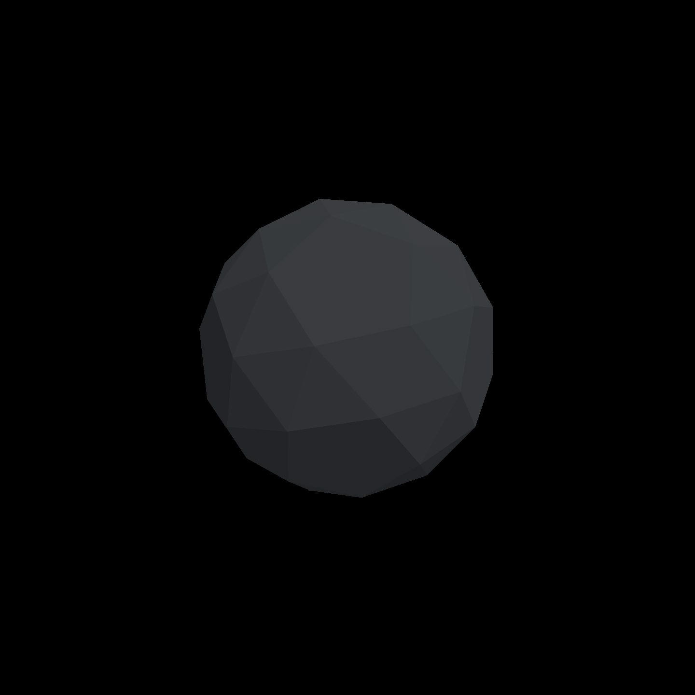
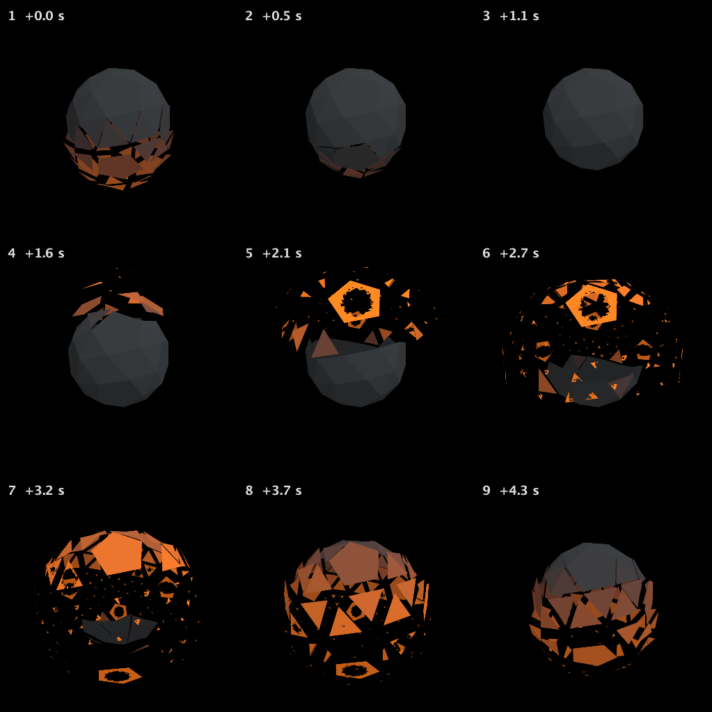
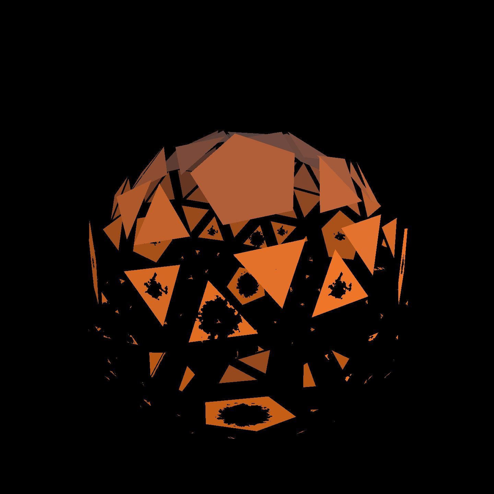

Ragged frames, not dots
The recorded exchange: the request, the tool activity, every image the tools returned to the model, and its reply. Expand tool activity to read the steps; open an image to see it full size.
Those holes are small neat dots. I want them to eat most of each far-flung face at the peak of the burst, with torn, uneven edges, so what's left is a ragged frame of glowing metal; still whole when the faces are home.
Tool activity · 41 steps
Starting AI conversation
InspectStackAutoSlot finished (1 ms)
CaptureRenderWindowRequest finished (31 ms)
Waiting for model
Considering face frame needs
Considering face frame needs
I'm evaluating the real face frame requirements, focusing on edge distance. It seems like only the slot in the xy direction can't accommodate varying edge orientations. I could potentially enlarge it by .6 while addressing noise at .35 during the initial phase. However, I think the user might prefer to start with smaller edits first before making any big changes. Let's make sure we're addressing their preferences effectively!
Next tool:
PatchStackAutoSlotPatchStackAutoSlot finished (4864 ms)
Waiting for model
Evaluating polygon boundaries
Evaluating polygon boundaries
I’m thinking about whether I can achieve this using fragment derivatives. The variables vLocal, nrm, and fid can’t handle polygon boundaries well. I might look into using a regular triangle, or even snub triangles, but my concern is orientation; it’s unknown. I believe that I could enlarge the threshold to .82 and possibly set the range to .55, saturating before reaching the max spread effect. It feels a bit complex, but I’ll keep exploring!
Next tool:
PatchStackAutoSlotPatchStackAutoSlot finished (4831 ms)
DocumentSourceReadRequest finished (18 ms)
DocumentSourceReadRequest finished (7 ms)
DocumentSourceReadRequest finished (7 ms)
EditFileRequest finished (7 ms)
EditFileRequest finished (0 ms)
EditFileRequest finished (0 ms)
CompileKotlinRequest finished (49 ms)
ReloadShadersRequest finished (315 ms)
ObserveStackAutoSlot finished (4493 ms)
DocumentSourceReadRequest finished (2 ms)
Waiting for model
Considering code patching
Considering code patching
I'm looking to patch the code to copy the same content but also repurpose the vertex attribute as a radius instead of using it in a fragment. I still need to do a code patch with the same new content. I have about 16k tokens left from my 24k budget, and I need to manage time wisely. I also need tools to transfer accepted proposals through EditFile, as it isn’t automatic. I plan to compile the source live while evaluating the geometry rebuilding process. Evaluating code patches
I realize I need to bind the code slots through the tool after a shader update. It would simplify the process to patch the old
face_decaysource to the new version via a specialized method before compiling. The current code already includes the new slot source, but I still need to inspect the old one with the live tool. I also need to evaluate if the slot bindings support updates to the host.Next tool:
DocumentSourcePatchRequestDocumentSourcePatchRequest finished (9 ms)
DocumentSourcePatchRequest finished (7 ms)
DocumentSourcePatchRequest finished (4 ms)
CompileKotlinRequest finished (44 ms)
ReloadShadersRequest finished (157 ms)
ListKotlinContextVariablesRequest finished (18 ms)
Waiting for model
Troubleshooting shader issues
Troubleshooting shader issues
I’m realizing that the source patch isn't running the code as expected. Maybe the shader isn't reloading the modified settings. I might need to evaluate and set new bindings, but the unresolved faceRadius and preamble are causing staleness. I should consider using the Mesh buffer binding to search the property "FromInput". The ListDefinitions are huge, so I'm trying to simplify my approach and focus on the WorkspaceSymbolSearch for "FromInput."
Next tool:
EvaluateKotlinExpressionRequestEvaluateKotlinExpressionRequest failed (339 ms)
success=false kind=error type= string=Expression failed.
WorkspaceSymbolSearch finished (22 ms)
AttachmentRequest finished (552 ms)
Waiting for model
Debugging mesh builder issue
Debugging mesh builder issue
I’m realizing that there's a problem with using the mesh builder attribute extensions for
MeshBuilder, not justMesh. It seems the existing position is causing a block withm.set. I wonder if the input for "faceRadius" needs to be made accessible. I should probably look into setting that right. It feels like I need to search for how to properly set my parameters here.Next tool:
EvaluateKotlinExpressionRequestEvaluateKotlinExpressionRequest finished (319 ms)
Waiting for model
Considering shader settings
Considering shader settings
I'm working with a new shader that's bound, but I'm using the old slot source and mesh. I need to check if I can use
m.input("faceRadius").addwith the same buffer to ensure it works smoothly withm.set. It seems like that should be fine, as long as everything is configured correctly. I just want to make sure all the components are aligned properly!Next tool:
EvaluateKotlinExpressionRequestEvaluateKotlinExpressionRequest failed (122 ms)
success=false kind=error type= string=Expression failed.
WorkspaceSymbolSearch finished (447 ms)
WorkspaceSymbolSearch finished (5 ms)
Completed






The burn is larger and much rougher now, but this isn’t finished: some small faces disappear rather than retaining a ragged glowing frame.
I added a boundary-following correction, but its live mesh update failed, so I can’t claim that version is working. The earlier cycle captures confirm healing at home; the new frame-preserving version still needs verification.